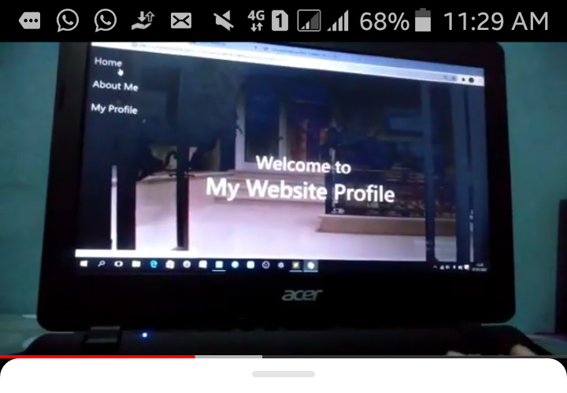
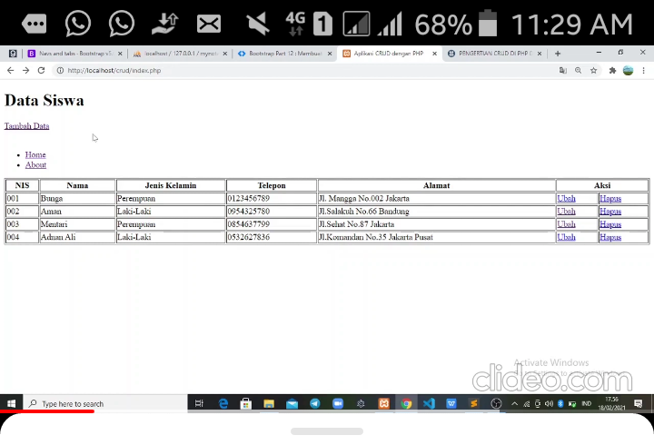
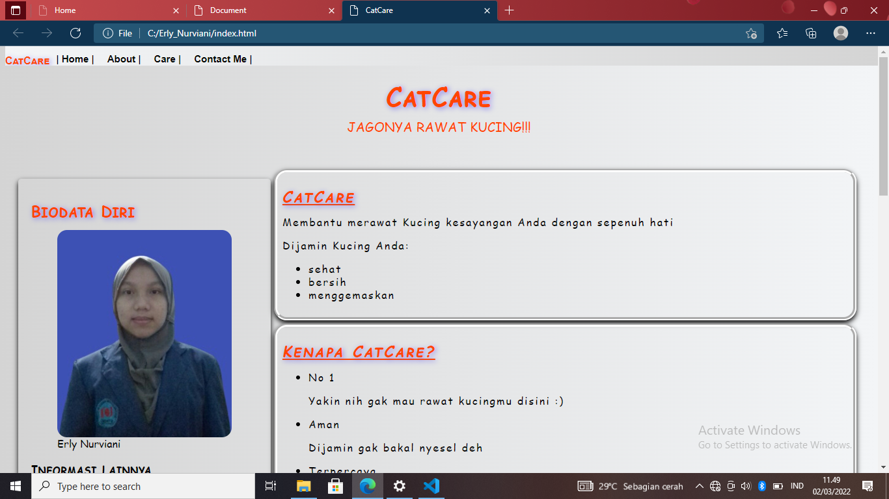

Saya seorang mahasiswi di STMIK WIDYA UTAMA
dengan komitmen yang kuat untuk belajar selagi bisa.
Erly Nurviani adalah seorang mahasiswi Jurusan Komputerisasi
Akuntansi di STMIK WIDYA UTAMA Purwokerto.
Memiliki ketertarikan terhadap pembuatan sebuah
website yang responif dengan tampilan yang menarik.
Pelatihan yang pernah diikuti:
Development Skill Up Project
(October 2020 to May 2021)
by ILO, clevio CODER CAMP, axioo CLASS
PROGRAM Topik:
Website and HTML
CSS (Cascading Style Sheet)
Bootstrap 4 as Framework
Javascript & Database Normalisation
Belajar Dasar Pemrograman Web
(1 Februari - 28 Februari)
by Dicoding
Topik:
Pendahuluan
Pengenalan HTML
Pendalaman HTML
Pengenalan CSS
Pendalaman CSS
Layout Responsif menggunakan Flexbox
Javascript Basic dan Manipulasi DOM
Web Storage
Penutup
Projek yang pernah dibuat:
Membuat Website Profile dengan HTML, CSS, dan Bootstrap

Membuat CRUD

Membuat Website dengan HTML, CSS, dan Javascript

Kontak Saya
Jika Anda mempunyai pertanyaan mengenai saya,
jangan ragu untuk menghubungi saya.
Di bawah ini adalah sosial media saya dan email saya:
Wa +62 823 492 450 54
Ig erly_nurviani_ erlynurviani17@gmail.com